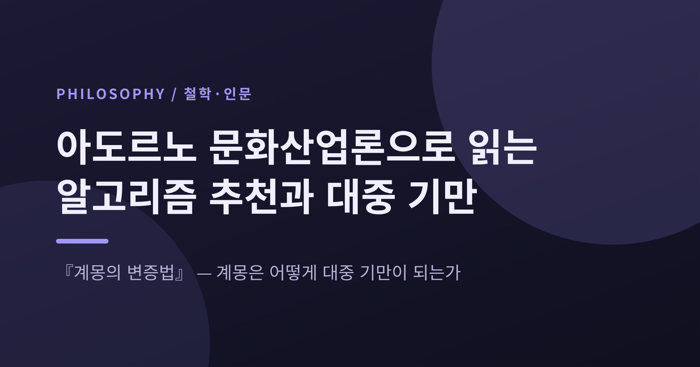
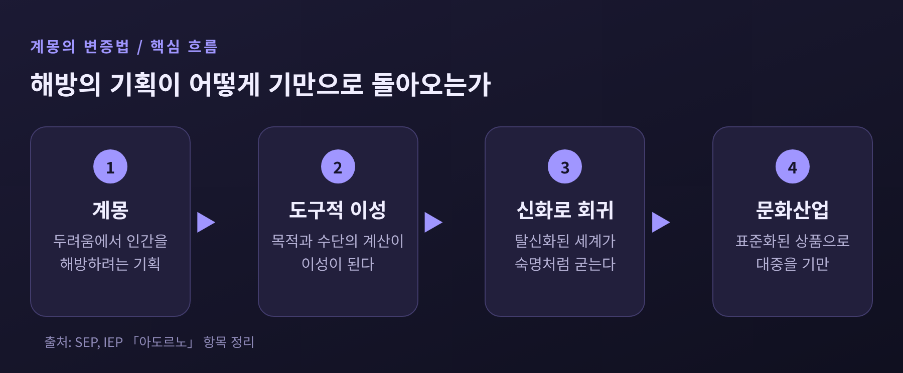
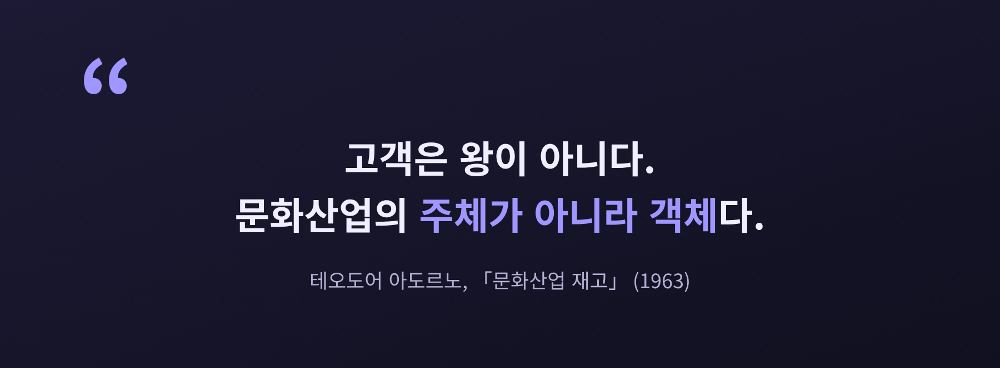
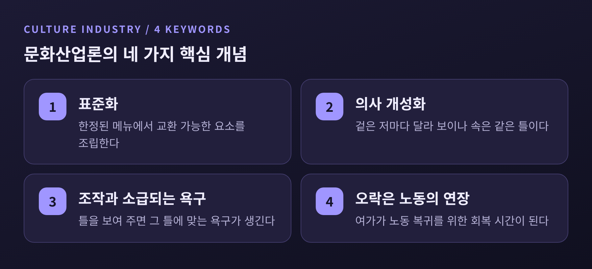
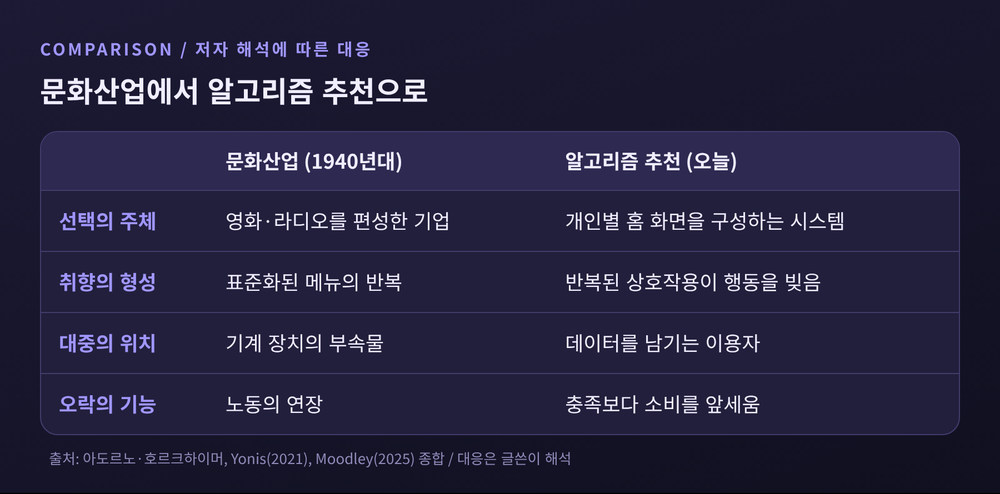
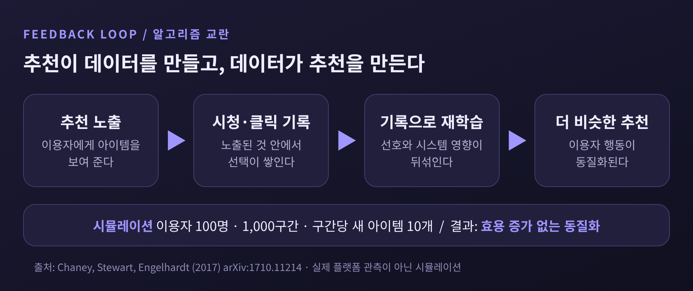
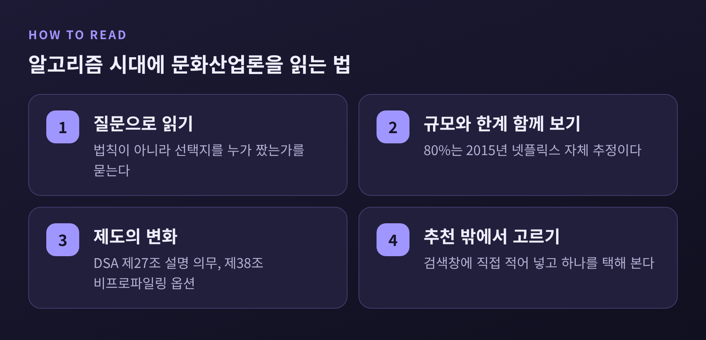

이번 글에서는 아도르노와 호르크하이머의 문화산업론을 정리하고, 이것이 오늘의 알고리즘 추천에 무엇을 시사하는지 살펴보겠습니다.
먼저 결론부터 적습니다. 두 사람이 말한 문화산업이란 문화가 표준화된 상품이 되어 대중의 판단력을 길러 주기는커녕 순응하게 만드는 체계입니다. 이 진단은 추천 알고리즘이 지배하는 지금 더 구체적으로 읽힙니다. 다만 그대로 받아들이기에는 한계도 분명하므로, 비판까지 함께 다루겠습니다.
책은 1940년대 전반, 두 사람이 전시 망명 중이던 미국 캘리포니아에서 쓰였습니다. 1944년에는 『철학적 단편들』이라는 제목으로 소량만 배포되었고, 1947년에 개정판이 정식 출간되었습니다. 이때 원래 제목은 부제로 물러났습니다. 아도르노는 훗날 자신의 주요 저작이 모두 이 책의 부연이라고 말하곤 했다고 전해집니다.
핵심 명제는 한 문장입니다. "신화는 이미 계몽이고, 계몽은 신화로 되돌아간다."
계몽은 인간을 두려움에서 해방하려는 기획이었습니다. 자연을 합리적으로 파악하고 다스리면 미신과 운명에서 벗어날 수 있다고 믿었습니다. 그런데 그 합리성이 목적과 수단을 계산하는 도구적 이성으로 굳어지자 사정이 달라집니다. 탈신화된 세계가 오히려 신화처럼 거스를 수 없는 숙명의 모습을 띠게 된다는 것이 두 사람의 진단이었습니다. 사회 질서를 우리가 통제할 수 없는 것처럼 느끼게 된다는 뜻입니다.
두 사람은 이 책을 완결된 체계가 아니라 아포리아, 곧 막다른 물음으로 규정했습니다. 계몽을 버리자는 책이 아니라, 계몽이 스스로를 돌아보게 하려는 책입니다.

책의 한 장인 「문화산업: 대중 기만으로서의 계몽」은 영화, 라디오, 잡지가 하나의 통일된 체계를 이룬다고 봅니다. 이 산물들은 표준화되어 대량으로 만들어지고, 청중의 필요보다 거대 기업의 경제적 이익에 복무합니다.
여기서 눈여겨볼 대목은 용어 선택입니다. 훗날 아도르노는 「문화산업 재고」에서 왜 '대중문화'라는 말을 버렸는지 설명했습니다. 대중문화라고 하면 문화가 대중에게서 자생적으로 올라온 것처럼 들리기 때문입니다. 그는 고객을 두고 문화산업의 주체가 아니라 객체라고 적었습니다. 대중을 "기계 장치의 부속물"이라고 표현한 대목도 있습니다.
'산업'이라는 단어도 공장에서 물건을 찍어낸다는 의미가 아닙니다. 표준화와 합리화된 유통, 그리고 산업적 조직 형태를 받아들였다는 뜻입니다. 진정한 예술에서 기술은 작품의 형식 논리 안쪽에 있지만, 문화산업에서 기술은 유통과 기계적 생산이라는 바깥쪽에 있습니다.

문화산업론에서 가장 자주 인용되는 개념은 표준화입니다. 문화 상품은 한정된 '메뉴'에서 교환 가능한 요소를 골라 조립됩니다. 같은 틀에서 찍어내는 편이 경제적으로 합리적이기 때문입니다.
아도르노가 1941년 「대중음악에 대하여」에서 든 예가 이해에 도움이 됩니다. 청취자는 표준적인 요소를 알아보도록 길들여져, 노래에서 예상 밖의 일은 일어나지 않습니다. 재즈의 즉흥연주조차 정형화된 상용구가 반복되는 '거짓 즉흥'이라는 것이 그의 비판이었습니다. 겉으로는 저마다 다른 개성을 내세우지만 속은 같은 틀이라는 이 현상을 의사 개성화라 부릅니다.
여기에 순환이 붙습니다. 책은 표준화가 "조작과 소급되는 욕구의 순환"을 만든다고 봅니다. 산업이 먼저 틀을 정해 보여 주면 대중은 그 틀에 맞는 욕구를 갖게 되고, 그 욕구가 다시 같은 틀을 정당화합니다. 누가 원인인지 구분할 수 없는 고리입니다.
그리고 가장 불편한 문장이 하나 있습니다. "후기 자본주의 하의 오락은 노동의 연장이다."
여가가 노동에서 해방된 시간이 아니라, 다시 노동으로 돌아가기 위한 회복 시간이 된다는 말입니다. 쉬운 오락은 해석 노력을 거의 요구하지 않습니다. 그래서 소비자는 수동적인 자리에 머뭅니다. 설령 이 기만을 알아채더라도 자기보존을 위해 순응하게 되며, 결국 자율적이고 독립적인 판단이 자라날 틈이 좁아진다는 것이 책의 진단입니다.

이제 오늘로 건너와 보겠습니다. 먼저 규모를 확인할 필요가 있습니다.
넷플릭스 소속 연구자 고메스우리베와 헌트는 2015년 논문에서, 추천 시스템이 시청 시간의 약 80%에 영향을 준다고 썼습니다. 나머지 20%는 검색입니다. 홈페이지는 시청 시간 3분의 2가 발견되는 곳이라고도 했습니다. 개인화와 추천의 결합 효과는 연간 10억 달러 이상을 절감한다고 추정했습니다. 이탈률이 몇 퍼센트포인트 줄었다는 설명입니다. 단, 이 수치는 회사 내부 저자의 자체 추정이며 2015년 기준이라는 점을 밝혀 둡니다. 80%라는 수치는 이 논문 한 곳에서만 확인됩니다.
이 사실을 문화산업론에 겹치면 몇 가지가 눈에 들어옵니다.

스탠퍼드 학부 우등논문에서 줄리애나 요니스는 넷플릭스의 추천이 이용자에게 "당신이 누구인지"를 알려 주는 방식으로 작동한다고 논합니다. 반복되는 상호작용이 행동을 빚어 '알고리즘 문화'를 만든다는 것입니다. 문화산업론과 닮은 점으로는 충족보다 소비를 앞세우고, 이익을 위해 취향을 주류 쪽으로 좁힌다는 점을 꼽습니다. 다른 점도 짚습니다. 이제는 비인간 행위자인 알고리즘이 지배적인 문화적 힘이 된다는 것입니다.
2025년 논문에서 타미아 무들리는 한발 더 나아갑니다. 표준화, 의사 개성화, 청취의 퇴행 같은 라디오 시대의 메커니즘이 스포티파이와 유튜브, 넷플릭스로 이어진다고 주장하며, 쾌락 자체가 프로그램 가능해졌다고 결론짓습니다. 다만 이 논문은 플랫폼 데이터나 청취자 조사 없이 저자의 해석에 기대고 있습니다. 해석의 렌즈로 읽되 증거로 읽어서는 곤란합니다.
철학적 주장과 달리 확인 가능한 연구도 있습니다. 차니, 스튜어트, 엥겔하트는 2017년 논문에서 시뮬레이션을 돌렸습니다.
그들이 문제 삼은 것은 '알고리즘 교란'입니다. 이미 추천에 노출된 이용자의 기록으로 추천 시스템을 다시 학습시키면, 이용자의 진짜 선호와 시스템이 만든 영향이 뒤섞입니다. 논문은 이것이 효용을 높이지 못한 채 이용자 행동을 동질화한다고 보고합니다.
설계는 이렇습니다. 이용자 100명, 1,000번의 시간 구간, 구간마다 새 아이템 10개를 넣고 시드 10개의 평균을 냈습니다. 결과는 반복해서 재학습할수록 무작위를 제외한 모든 방식이 이상적 기준선 이상으로 이용자들을 서로 닮게 만들었다는 것입니다. 인기도 기반 추천이 집단 수준의 동질성을 가장 크게 높였습니다. 효용이 낮은 이용자일수록 동질화가 더 컸고, 소비는 인기 있는 아이템 쪽으로 쏠렸습니다.
여기에는 단서가 따라붙습니다. 어디까지나 시뮬레이션이지, 실제 플랫폼의 관측 결과가 아닙니다. 그리고 가중치 기법으로 효용을 올리면서 동질화를 줄일 수 있다는 예비 결과도 함께 보고되었습니다. 알고리즘이 숙명은 아니라는 뜻입니다.

균형을 위해 비판을 짚어야 합니다. 가장 영향력 있는 반론은 하버마스의 것입니다. 그는 도구적 이성의 확산을 아도르노가 과장했고, 그 때문에 합리적 개혁의 가능성이 닫혀 버린다고 보았습니다. 또 "계몽은 전체주의적"이라고 말하는 비판 자체가 체계 바깥의 자리를 전제한다는 수행적 모순도 지적했습니다.
수용자 연구의 반론도 있습니다. 스튜어트 홀은 시청자가 제작 의도와 반대되는 의미를 만들 수 있다고 보았고, 수용자를 '문화적 바보'로 취급하는 시각을 깊이 비사회주의적이라 불렀습니다. 존 피스크는 대중문화는 문화산업이 아니라 민중이 만든다고 주장했습니다. 이에 대해 짐 맥기건은 그런 낙관이 시장의 소비자 주권과 닮았다고 되받았고, 그레그 필로는 홀의 모델이 미디어 권력을 간과한다고 비판했습니다.
엘리트주의라는 비판도 있습니다. 특히 아프리카계 미국인에게 뿌리를 둔 음악을 향한 적대감이 문제로 지적됩니다. 아도르노는 쇤베르크나 베케트 같은 아방가르드에는 '유토피아적' 요소가 남아 있다고 예외를 두었습니다. 대중음악 쪽에서는 비틀스의 『Rubber Soul』이나 켄드릭 라마의 『To Pimp a Butterfly』가 표준화 테제의 반례로 거론됩니다. 다만 이 반례 목록은 대중 교양 매체의 해석이므로 참고로만 두겠습니다.
이 비판들은 문화산업론을 쓸모없게 만들지 않습니다. 오히려 어떻게 읽어야 하는지를 알려 줍니다. 법칙이 아니라 질문으로 읽으라는 것입니다. 책 자체도 규정적 부정과 자기반성을 통해 계몽의 긍정적 개념을 준비하려 했을 뿐, 처방을 약속하지 않았습니다.
예전의 문화산업은 방송 시간표와 극장 상영표로 대중을 줄 세웠습니다. 지금은 개인별 홈 화면이 그 일을 합니다. 형식은 달라졌지만 질문은 같습니다. 선택지를 짠 쪽은 누구이고, 그 기준은 이용자의 충족인가 기업의 이익인가라는 물음입니다.
제도는 이 질문에 일부 답하기 시작했습니다. EU의 디지털서비스법 제27조는 플랫폼이 추천 시스템의 주요 기준과 그 이유를 설명하도록 하고, 선택지가 여럿이면 이용자가 추천 설정을 고를 수 있게 합니다. 제38조는 초대형 온라인 플랫폼에 프로파일링에 기반하지 않는 추천 옵션을 최소 하나 제공하도록 요구합니다. 다만 제27조는 해석이 갈려 초기 감사에서 플랫폼마다 기준이 달랐고, 비프로파일링 옵션이 실제로 얼마나 쓰이고 효과가 있는지는 확인된 자료가 없습니다.
개인의 차원에서는 거창한 일이 필요하지 않습니다. 추천 목록 밖에서 하나를 직접 골라 보는 일입니다. 검색창에 이름을 적어 넣고, 해석 노력이 드는 작품을 일부러 택해 보시길 권합니다. 오락이 노동의 연장이 되지 않으려면 여가 안에 작은 비효율이 남아 있어야 하기 때문입니다.

정리하면 이렇습니다.
문화산업론의 핵심은 계몽이 스스로를 의심하지 않을 때 기만으로 변한다는 경고입니다. 알고리즘 추천을 기술의 문제로만 보면 이 경고를 놓칩니다. 기술 뒤에 있는 경제적 힘이 무엇을 목표로 삼는지를 함께 물어야 합니다.
"추천은 편리하지만, 편리함이 판단까지 대신해 주지는 않습니다."
오늘 저녁 홈 화면의 첫 줄을 건너뛰고 직접 하나를 골라 보시겠습니까. 그 작은 선택이 이 오래된 책을 읽는 가장 현실적인 방법일 것입니다.